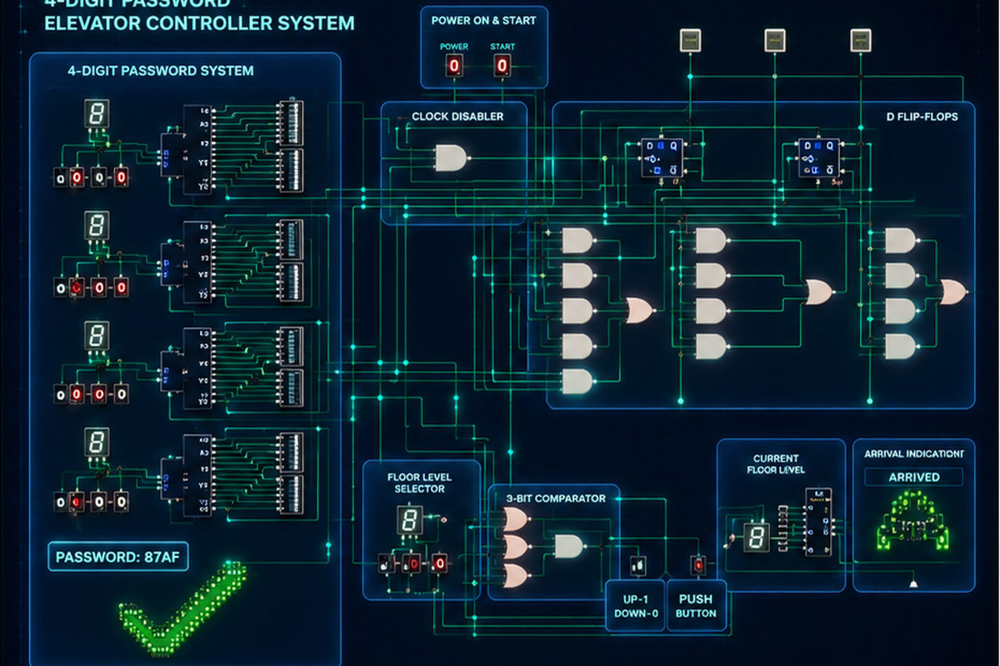
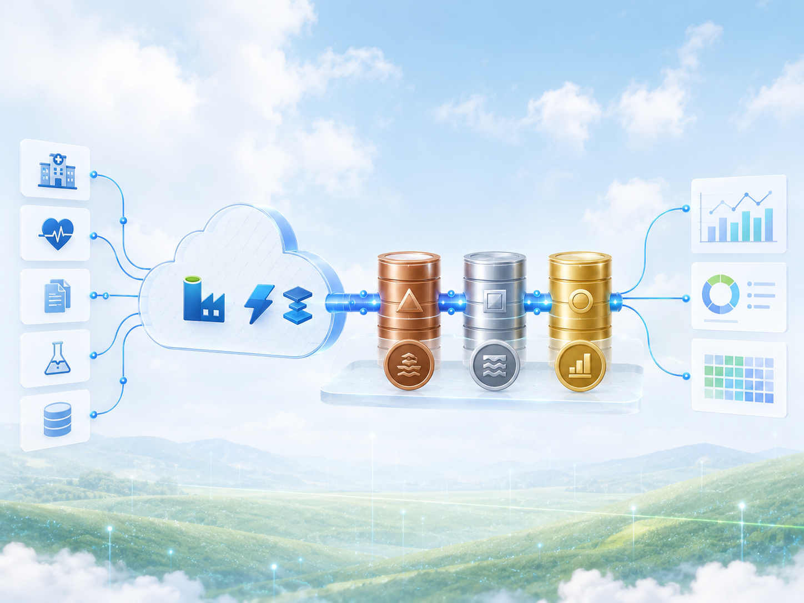
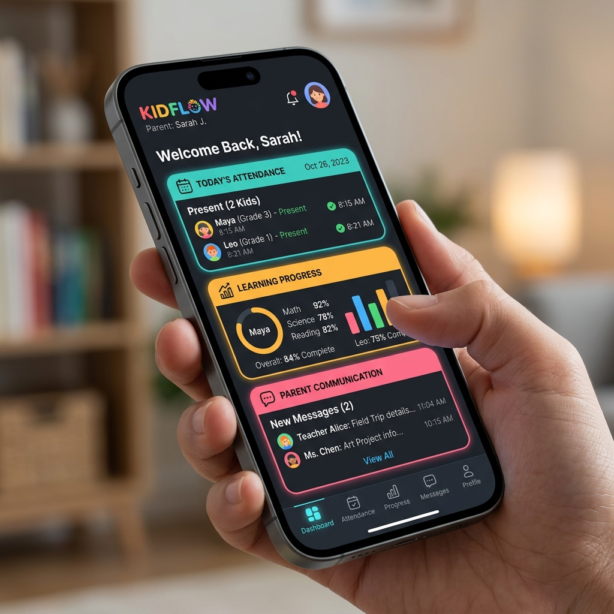

Elijah She Yu Sheng
Python & Data Analytics | Database Technology | Business Intelligence
Year 3 Bachelor of Computer Science (Data Engineering) undergraduate at Universiti Teknologi Malaysia with a strong interest in data engineering, database systems, analytics, dashboards, and client-focused data technology solutions.
CGPA 4.00 | Computer Science · Data Engineering
About Me
My portfolio connects technical project work, academic performance, and leadership experience into one clear profile.
I am Elijah She Yu Sheng, a Year 3 Bachelor of Computer Science (Data Engineering) undergraduate at Universiti Teknologi Malaysia (UTM) with a current CGPA of 4.00. I enjoy working with data, solving practical problems, and building solutions that connect technical skills with real-world business needs.
My main interests include data engineering, database systems, data analytics, business intelligence, ETL workflows, dashboards, and client-focused data technology solutions. Besides technical development, I also value communication, teamwork, leadership, and stakeholder engagement.
Skills
A balanced mix of database, analytics, web development, cloud exposure, and communication skills.
Featured Projects
Projects are organized to show practical problem solving, technical growth, and the ability to explain work clearly.

Designed a secure password-protected elevator controller using digital logic components in the DEEDS simulator, including decoder logic, D flip-flops, comparator circuits, floor selection, and arrival indication.
View Project DetailsDesigned a reliable and scalable network infrastructure for a new academic building, including cabling layout, device selection, subnetting, IP addressing, security planning, and cost feasibility analysis.
View Project Details
Built a cloud-based data pipeline using Azure Medallion Architecture, applying Bronze, Silver, and Gold layers for data ingestion, transformation, and reporting preparation with Azure Data Factory and Spark.
View Project Details
Demonstrates structured application logic, operational workflows, and Firebase-backed development.
View Project DetailsCoursework Portfolio
Each year highlights a different stage of growth, from computing foundations to advanced data engineering and applied systems.
Computing foundation, programming basics, ethics, digital logic, computer organization, statistics, human computer interaction, and system analysis.
Data analytics programming, data mining, database, data structures and algorithms, networking, software engineering, system development, and entrepreneurship.
Artificial intelligence, database programming, enterprise systems design and modeling, applied technology, and advanced academic projects.
Experience & Leadership
These roles show how I grew through responsibility, communication, planning, and service in both university and real-world settings.
Led committee members in planning and organizing cultural, academic, and community activities. Built leadership, teamwork, and decision-making experience.
Managed booth and activity operations, coordinated stakeholders, tracked progress, and supported campaign reporting. The team achieved Student Category 2nd Runner Up.
Supported fellowship sessions, student engagement, planning, and team coordination.
Provided customer support, explained products, handled client issues patiently, and completed assigned tasks responsibly.
Listened to customer needs, recommended suitable packages, handled inquiries, and supported customer satisfaction.
Conducted lessons for young students, monitored progress, communicated with parents, and provided learning feedback.
Achievements & Certifications
A quick view of the evidence behind the portfolio, including academic performance, competitions, leadership recognition, and certifications.
Bachelor of Computer Science (Data Engineering)
Academic performance in the Data Engineering programme.
Student Category 2nd Runner Up.
Faculty of Computing leadership role.
Pre-Contract for Life Insurance Agents & Investment-Linked Life Insurance Examination.
Cloud Foundations, Cloud Developing, and Cloud Data Pipeline Builder.
Contact
For internship, project, academic, or portfolio review conversations, reach me through the public channels below.